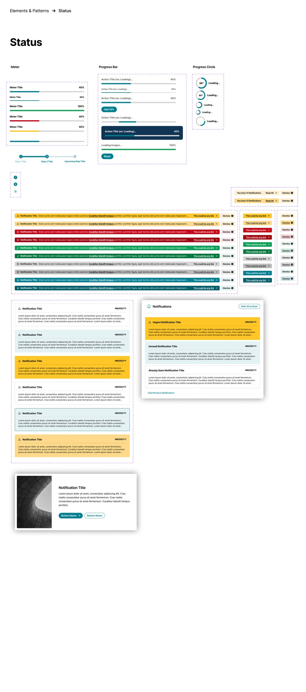
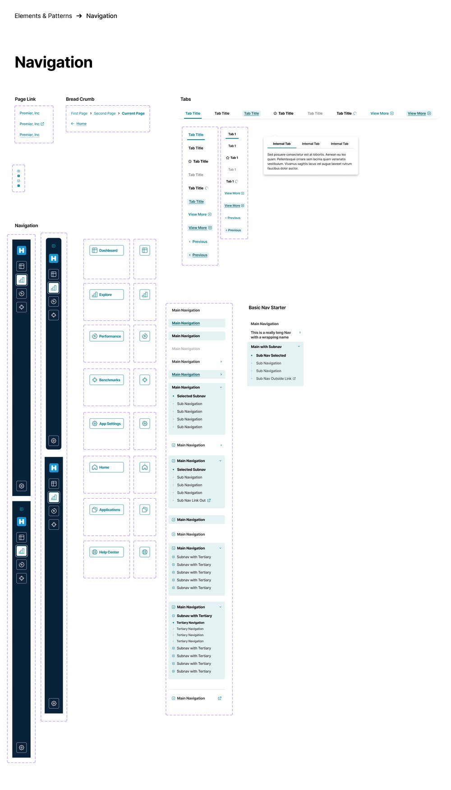
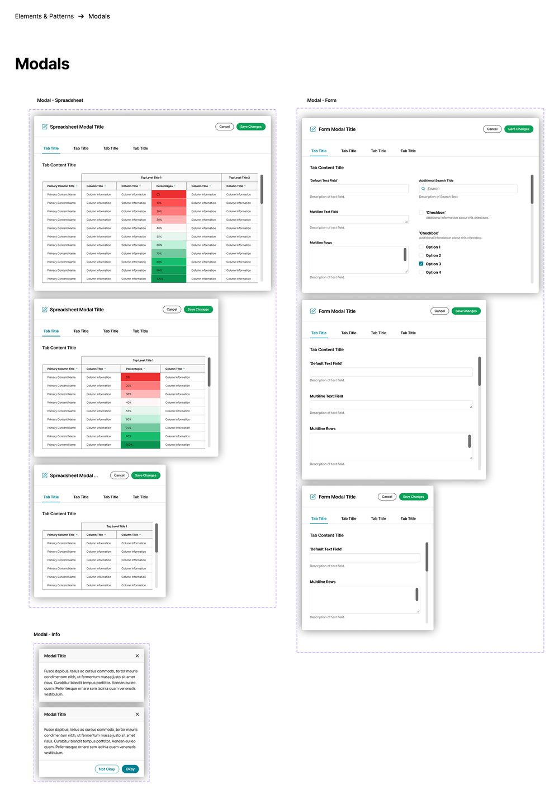
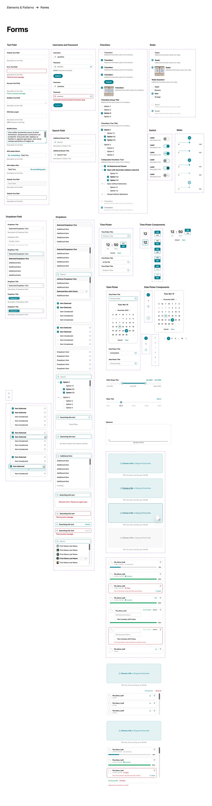
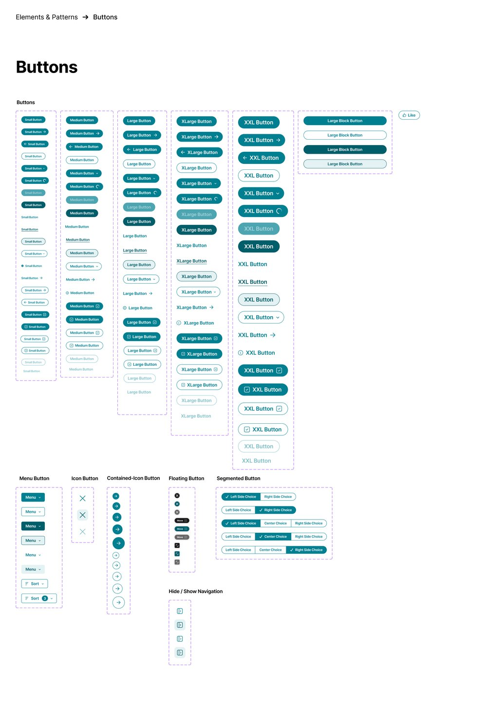
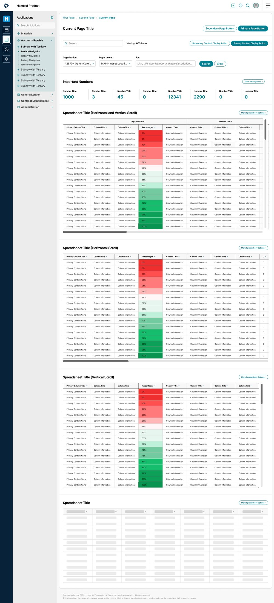
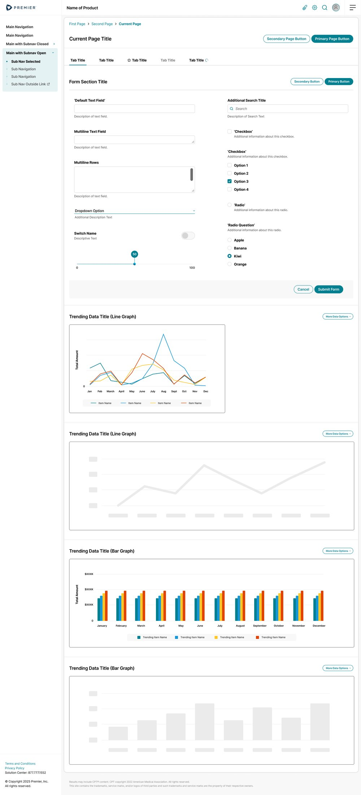

Scaling design across 75+ enterprise healthcare products
Contributing to a design system that unified product experiences, aligned design and engineering, and reduced the cost of building enterprise software.
Role
UX Manager (Contributing Designer)
Team
Enterprise Design System Team — UX Designers, Front-End Engineers, Brand, Product Teams
Platform
Enterprise SaaS
Focus areas
Design Systems · Component Libraries · Design-to-Code · Platform Strategy
Overview
Premier's software portfolio had grown through decades of mergers and acquisitions — more than 75 enterprise applications, each developed by a different team, using different technologies, design approaches, and engineering practices.
While the company successfully integrated businesses, the products themselves remained largely independent. As a contributing UX Manager on the Enterprise Design System team, I helped evolve a shared design language that aligned designers and engineers around reusable components and common interaction patterns.
Our objective wasn't simply to improve visual consistency — it was to reduce duplicate work, improve development efficiency, and create a scalable foundation for future products.
The challenge
Premier's portfolio wasn't suffering from a lack of design talent. It was suffering from years of independent evolution.
Every product team solved similar interface problems in different ways. Some applications built entirely custom UI. Others developed their own component libraries. A handful adopted Premier's existing Fireball pattern library, while many products implemented similar interactions using completely different code.
As a result, two applications could display nearly identical buttons, forms, or tables while using entirely different HTML structures, CSS, accessibility implementations, and interaction logic. From both design and engineering perspectives, every product effectively spoke a different language.
Updating branding or introducing accessibility improvements often required multiple engineering teams to rebuild the same component independently. What should have been one design decision became dozens of implementation efforts.
How might we create a shared design language that aligns design, development, and accessibility across more than 75 products — without forcing every team to rebuild their applications from scratch?
My role
As a UX Manager and contributing member of the Enterprise Design System team, my role centered on connecting platform work with real product implementation — applying the system across enterprise healthcare applications rather than owning it independently.
Designed and refined reusable UI components in Figma
Helped establish interaction standards and component behaviors
Applied the design system across enterprise products
Identified missing components and implementation gaps
Collaborated with front-end engineers to align Figma components with Storybook
Partnered with product teams adopting the design system
Conducted design reviews and implementation guidance
Fed implementation learnings back into the design system
Team contributions
Defined the overall design language
Built and maintained the shared component library
Established governance and contribution workflows
Developed Storybook implementation components
Managed design tokens and visual standards
Supported adoption across Premier's product portfolio
Understanding the problem
As we partnered with product teams across the organization, several consistent themes emerged.
01
Every team built UI differently
Although products solved many of the same problems, every team had implemented its own version of common interface patterns — buttons, forms, tables, navigation, dialogs, notifications. Many looked similar on the surface while behaving differently underneath. The inconsistency wasn't simply visual: different implementations introduced different accessibility behaviors, interaction models, engineering approaches, and maintenance costs. The organization wasn't maintaining one button component — it was maintaining dozens.
02
Fireball wasn't enough
Premier already maintained an internal pattern library known as Fireball, but adoption varied dramatically across the organization — some teams embraced it, others adopted portions of it, and many ignored it entirely. Without consistent adoption, Fireball never became a true source of truth. Rather than replacing it, our objective became evolving the organization toward a modern design system shared equally by design and engineering.
03
Consistency was expensive
Every branding update, every accessibility improvement, and every interaction enhancement required each product team to modify its own implementation. The organization repeatedly invested engineering effort solving identical UI problems.
04
Adoption mattered more than documentation
Creating components would be relatively easy. Convincing dozens of independent product teams to use them would be much harder. Success depended less on documentation and more on creating something teams genuinely wanted to adopt.
Product strategy
The project wasn't about replacing one style guide with another. It was about creating a shared product platform. Our Design System team aligned around three principles.
Designers and developers reference the same components using the same terminology.
Rather than documenting UI, we created reusable assets that accelerated both design and development.
A shared component library
Every core pattern — status, navigation, modals, forms, and buttons — was rebuilt once as a reusable component, replacing dozens of one-off implementations across the portfolio.

01 — Status patterns: meters, progress bars and circles, and notification components share consistent states, color, and behavior

02 — Navigation patterns: breadcrumbs, tabs, and multi-level sidebar navigation built as one shared system rather than per-product implementations

03 — Modal patterns: spreadsheet, form, and info modals standardized across products, each responsive to its content

04 — Form patterns: text fields, checkboxes, radio groups, dropdowns, date pickers, sliders, and file upload — the most reused components in the library

05 — Button system: every size, state, and variant defined once, eliminating dozens of one-off implementations across products
Applying the design system
One of my primary responsibilities involved implementing the design system within enterprise healthcare products — working directly inside production applications revealed opportunities that weren't visible when designing components in isolation.
Each implementation surfaced new questions: Where were components missing? Which patterns created friction? Which accessibility behaviors needed refinement? Which products solved similar problems differently? Those observations became valuable feedback for the Design System team.
Instead of treating implementation as the final step, we viewed every product as an opportunity to improve the platform itself.
This continuous feedback loop became one of my primary contributions.

06 — The system applied: a starter template for large-data-grid pages, assembled entirely from shared spreadsheet, navigation, and data components

07 — The system applied: a second starter template pairing shared form components with line and bar graph data visualization
Design + engineering partnership
One of the defining characteristics of the initiative was the close partnership between design and engineering.
Our team built reusable components in Figma while engineering maintained corresponding implementations in Storybook — creating a shared source of truth that reduced translation errors between design and production.
As products adopted the system, I collaborated closely with engineers to ensure design intent translated accurately, while identifying opportunities to improve component behavior based on implementation experience.
The result wasn't simply better UI. It was better collaboration.
Driving adoption
The greatest challenge wasn't technical. It was organizational.
Many product teams had invested years building custom UI libraries, and naturally questioned whether migrating would provide enough value. Rather than mandating adoption, we focused on demonstrating benefits. Teams quickly recognized:
Faster interface design
Reduced engineering effort
Less UI rework
Fewer QA corrections
Improved accessibility consistency
Easier onboarding for new designers and developers
As those benefits became visible, adoption accelerated organically. The strongest argument for the design system wasn't governance — it was productivity.
Business impact
Although the design system was a shared organizational effort, its impact became increasingly visible as adoption expanded.
Increased design accuracy
Shared components reduced inconsistencies between design and implementation, resulting in faster QA cycles and less UI rework.
Stronger product consistency
Customers increasingly experienced Premier's products as a cohesive ecosystem rather than a collection of unrelated applications.
Growing team adoption
Reusable design and engineering assets encouraged more product teams to adopt the system as they experienced measurable time savings.
Reduced development costs
Shared components reduced duplicate engineering work, shortened implementation time, and decreased maintenance costs across multiple products.
Reflection
Contributing to Premier's Design System fundamentally changed how I think about platform design.
Early in my career, I viewed design systems primarily as collections of reusable UI components. This work taught me they're organizational products — their users aren't end customers, they're designers and engineers. Success isn't measured by how many components exist. It's measured by whether teams choose to use them.
Working across production applications also reinforced another lesson: two interfaces can look identical while being implemented in completely different ways. Those hidden implementation differences create accessibility issues, inconsistent behaviors, technical debt, and unnecessary engineering effort.
A successful design system aligns more than visuals. It aligns people.
By partnering closely with engineering, applying the system across real products, and continuously feeding implementation insights back into the platform, I helped strengthen a system that became increasingly valuable as adoption grew.
Design systems are products
Their success depends on solving problems for designers and developers — not simply enforcing visual standards.
Platform work requires continuous feedback
Applying components inside real products reveals opportunities that documentation alone cannot.
Adoption is earned
Teams embrace shared systems when they clearly improve productivity and reduce complexity.
Design and code should evolve together
The greatest value came from aligning Figma, Storybook, designers, and engineers around one shared language.
Why this project matters
This project demonstrates my ability to contribute beyond individual product features by improving the systems that enable teams to design and build software at scale.
As a contributing UX Manager on the Enterprise Design System team, I helped bridge platform design and product implementation — collaborating closely with engineering, identifying opportunities through real-world application, and strengthening a shared system used across a diverse healthcare portfolio.
The experience reinforced my passion for creating products that don't just serve end users — they also empower the teams who build them.